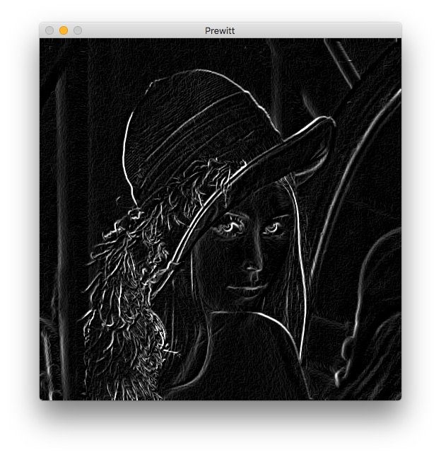
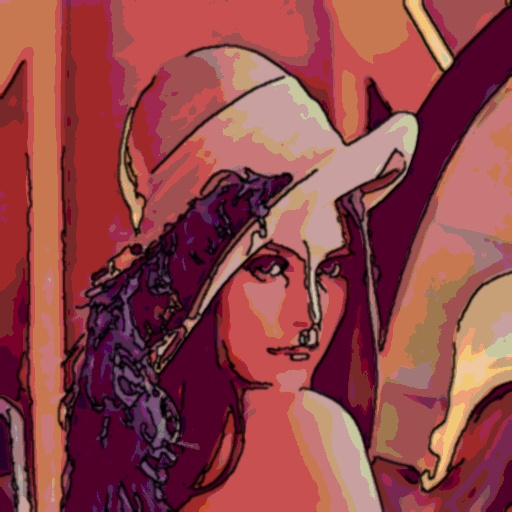
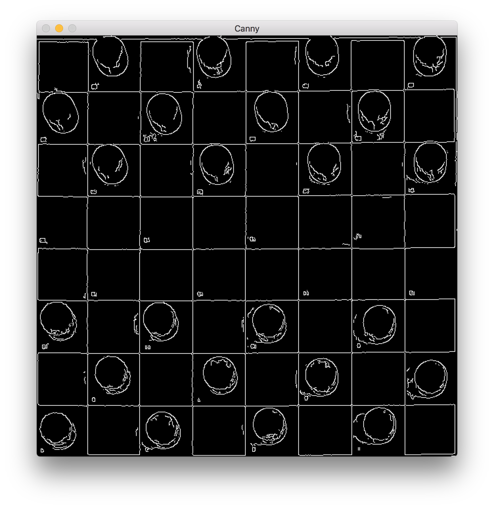
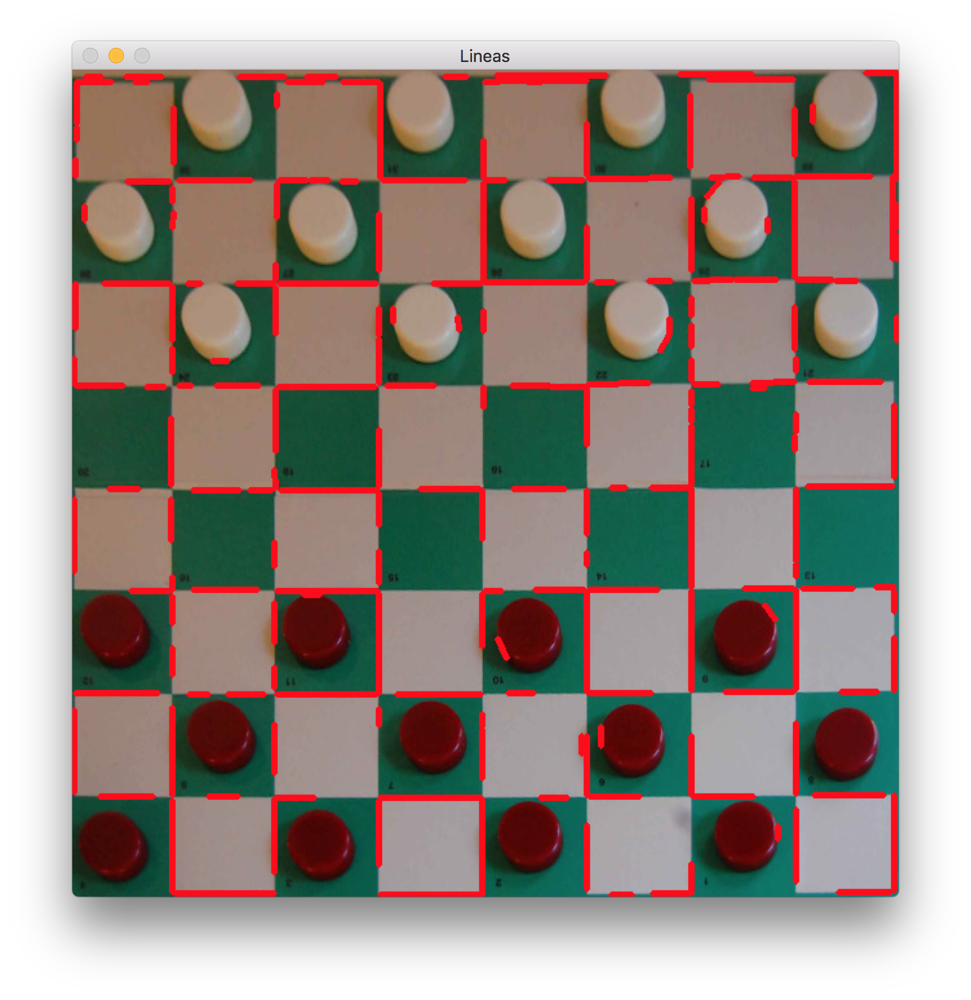
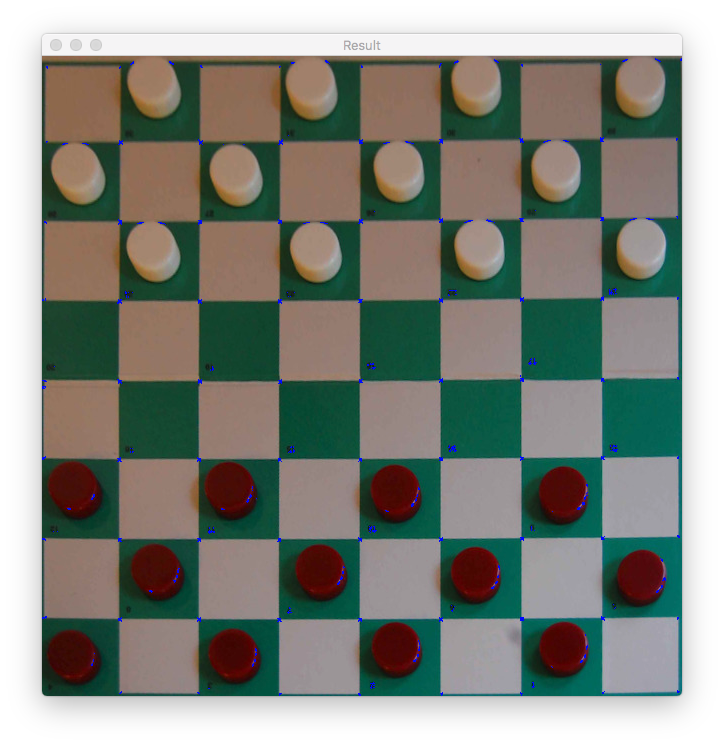

Tema 4 - Procesamiento de imagen: Filtrado y detección de bordes, líneas, puntos aislados y esquinas¶
En este tema aprenderemos a detectar zonas de interés en imágenes.
Detección de bordes¶
OpenCV tiene una función que implementa directamente el gradiente de Sobel en ambas direcciones:
1 2 3 4 | // Gradiente X Sobel(src, grad_x, CV_32F, 1, 0, 3); // Gradiente Y Sobel(src, grad_y, CV_32F, 0, 1, 3); |
Ejemplo de uso:
1 2 3 4 5 6 7 8 9 10 11 12 13 14 15 16 17 18 19 20 21 22 23 24 25 26 27 | #include "opencv2/opencv.hpp" #include <iostream> using namespace cv; int main() { Mat m = imread("lena.jpg", IMREAD_GRAYSCALE); if (image.data) { // Calculamos gradiente horizontal y vertical Mat dx, dy; Sobel(m, dx, CV_32F, 1, 0); Sobel(m, dy, CV_32F, 0, 1); // Calculamos la magnitud Mat magn; magnitude(dx, dy, magn); // Convertimos de float a uchar y mostramos el resultado magn.convertTo(magn, CV_8UC1); imshow("Sobel", magn); waitKey(0); } else cout << "Error opening lena.jpg" << endl; } |
También podemos usar OpenCV para extraer los gradientes en ambas direcciones de una imagen en escala de grises usando las fórmulas vistas en teoría, y esto es lo que haremos en el siguiente ejercicio.
Ejercicio¶
Podemos usar distintos kernels para implementar otros gradientes mediante convolución. Crea un programa llamado prewitt.cpp a partir del siguiente código, realizando las convoluciones correspondientes de los filtros Prewitt en horizontal y vertical y completando las partes marcadas con TODO:
1 2 3 4 5 6 7 8 9 10 11 12 13 14 15 16 17 18 19 20 21 22 23 24 25 26 27 28 29 30 31 32 33 | #include <opencv2/opencv.hpp> #include <iostream> using namespace std; using namespace cv; int main() { Mat image = imread("lena.jpg", IMREAD_GRAYSCALE); Mat gu, gv; if (image.data) { // TODO: Calculamos gradiente horizontal gu mediante convolución // TODO: Calculamos gradiente vertical gv mediante convolución // Pasamos a float el resultado (la imagen original es uchar) para que los calculos no saturen en la funcion magnitude gu.convertTo(gu, CV_32F); gv.convertTo(gv, CV_32F); // TODO: Calculamos la magnitud usando la función magnitude de OpenCV y guardamos el resultado en magn: Mat magn; // Convertimos de float a uchar para poder visualizar la imagen magn.convertTo(magn, CV_8UC1); // TODO: Guardar resultado en lena_prewitt.jpg imshow("Magnitud", magn); waitKey(0); } else cout << "Error opening lena.jpg" << endl; } |
Como puedes ver, usamos una resolución radiométrica CV_32F para evitar overflow. Después devolvemos el resultado a su resolución original mediante convertTo.
El programa debe leer en escala de grises la imagen lena.jpg, calcular la magnitud del gradiente, mostrarlo y guardarlo en la imagen lena_prewitt.jpg. El resultado debería ser como la siguiente imagen:

Verás que el resultado de ejecutar ambos programas es distinto y que Sobel detecta los bordes mejor que Prewitt.
Reducción de ruido¶
Como hemos visto en teoría, los filtros gaussianos sirven para suavizar la imagen y eliminar ruido. Se suelen usar como paso previo a los sistemas de detección de bordes para evitar que el ruido les afecte.
En OpenCV tenemos una implementación del filtro gaussiano en la función GaussianBlur, que requiere el tamaño del filtro y su desviación típica:
1 | GaussianBlur(src, dst, Size(3,3), 0); // Realiza un filtrado gaussiano con un kernel de 3x3 píxeles y desviación típica 0 |
Esta función admite más parámetros, como la desviación típica en el eje Y (si se omite es la misma que en el eje X) o el tipo de interpolación en los bordes (por defecto, BORDER_DEFAULT).
También podemos aplicar un filtro bilateral:
1 | bilateralFilter(src, dst, 15, 80, 80); // Aplica un filtro bilateral con un diámetro de 15 pixeles vecinos y una intensidad mínima 80. |
Como ves, los últimos parámetros son dos umbrales en lugar de uno (es algo complicado de explicar, pero sirven para las imágenes en color). Normalmente se usa el mismo valor para estos dos umbrales. Si es pequeño (< 10), el filtro no tendrá mucho efecto. Si es grande (> 150) tendrá un efecto fuerte, haciendo que la imagen tenga un estilo de cómic (cartoon). Para más información se puede consultar la referencia de la función.
Por último, en OpenCV podemos usar un filtro Canny de la siguiente forma:
1 2 3 4 | int lowThreshold = 30; int ratio = 3; Canny (src, dst, lowThreshold, lowThreshold*ratio); // Filtro canny con los umbrales minimo y maximo (hysteresis) proporcionados |
Como ocurre con las funciones anteriores, los filtros Canny también pueden tener más parámetros.
Ejercicio¶
Vamos a hacer un ejercicio usando todos los filtros anteriores. En este caso, partiremos de este código que tendrás que descargar, completando las instrucciones indicadas con TODO. Se trata de un ejercicio para cartoonizar una imagen. Llama al siguiente programa cartoonize.cpp.
1 2 3 4 5 6 7 8 9 10 11 12 13 14 15 16 17 18 19 20 21 22 23 24 25 26 27 28 29 30 31 32 33 34 35 36 37 38 39 40 41 42 43 44 45 46 47 48 49 50 51 52 53 54 55 56 57 58 59 60 61 62 63 64 65 66 67 68 69 | #include <opencv2/opencv.hpp> #include <iostream> using namespace cv; using namespace std; int main(int argc, const char* argv[]) { if (argc!=2) { cerr << "Syntax: " << argv[0] << " <image>" << endl; exit(-1); } Mat img = imread(argv[1]); Mat imgCanny, imgCannyf, imgBF, imgCanny3c, result, resultf; /** BORDES **/ // Aplicamos un filtro de mediana de tamaño 7x7 para quitar ruido. // TODO // Detectamos los bordes con canny, umbral inferior 50 y superior 150 // TODO // Dilatamos los bordes mediante un filtro cuadrado de 2x2 // TODO (guardar en imgCanny) // Escalamos los valores resultantes a 1 y los invertimos imgCanny = 1 - (imgCanny / 255); // Convertimos la imagen a float para permitir multiplicaciones con valores entre 0 y 1 imgCanny.convertTo(imgCannyf, CV_32FC3); // Aplicamos un filtro gaussiano de 5x5 pixels con desviacion tipica 0 // TODO (guardar en imgCannyf) /** COLOR **/ // Sobre la imagen original, aplicamos un filtro bilateral de diametro 9 con umbrales 150 y 150. // TODO (guardar en imgBF) // Truncamos los colores. En este caso usamos un valor de 25 (cuanto mas alto mas "cartoonizado") result = imgBF / 25; result = result * 25; // Convertimos la imagen a float, igual que hemos hecho con los bordes // TODO (guardar en resultf) /** UNIMOS COLOR Y BORDES **/ Mat cannyChannels[] = { imgCannyf, imgCannyf, imgCannyf }; merge(cannyChannels, 3, imgCanny3c); // Multiplicamos las matrices de color (resultf) y bordes (imgCanny3c) // TODO (guardar en resultf). Importante: Para multiplicar se debe usar la funcion multiply de OpenCV. La operacion c=a*b se implementa con multiply(a,b,c); // convertimos el resultado a una imagen estandar (color de 8 bits) // TODO (guardar en result) // Mostramos el resultado imshow("Input", img); imshow("Result", result); imwrite("cartoonized.jpg", result); waitKey(0); return 0; } |
El resultado del programa debería ser idéntico a este:

Detección de líneas¶
La llamada más sencilla para ejecutar Hough como detector de líneas es:
1 | HoughLinesP(src, lines, rho, theta, threshold); |
src: Imagen de un canal en escala de grises.lines: Vector de líneas. Cada línea es otro vector de 4 elementos (x1, y1, x2, y2), donde (x1,y1) y (x2, y2) son los puntos extremos de la línea.rho: Resolución de la distancia del acumulador (en píxeles).theta: Resolución del ángulo del acumulador (en píxeles).threshold: Umbral del acumulador. Sólo se devuelven aquellas líneas que tienen más votos que este umbral.minLineLength(opcional): Mínima longitud de una línea. Los segmentos más cortos que esta longitud se descartan.maxLineGap(opcional): Máximo salto permitido entre puntos de la misma línea para enlazarlos.
La función Hough debe usarse siempre tras un detector de bordes. Por ejemplo:
1 2 3 4 5 | vector<Vec4i> lines; Mat dst; Canny(src, dst, 50, 200, 3); HoughLinesP(dst, lines, 1, CV_PI/180, 80, 30, 10 ); |
Veamos un programa completo que usa Hough y muestra las líneas detectadas sobre la imagen:
1 2 3 4 5 6 7 8 9 10 11 12 13 14 15 16 17 18 19 20 21 22 23 24 25 26 27 | #include <opencv2/opencv.hpp> #include <iostream> using namespace cv; using namespace std; int main() { Mat src = imread("damas_corrected.jpg"); Mat dst; vector<Vec4i> lines; Canny(src, dst, 20, 100, 3); imshow("Canny",dst); // Mostramos la salida de Canny HoughLinesP(dst, lines, 1, CV_PI/180, 20, 10, 0); Mat color_dst(src); // imagen de salida for (unsigned i = 0; i < lines.size(); i++) { // Dibujamos las lineas detectadas line(color_dst, Point(lines[i][0], lines[i][1]), Point(lines[i][2], lines[i][3]), Scalar(0,0,255), 3); } imshow("Lineas", color_dst); // Mostramos las líneas detectadas waitKey(0); } |
La salida tras aplicar el filtro Canny:

Las líneas detectadas usando Hough:

La transformada de Hough también se puede utilizar para detección de otras formas geométricas como círculos. La llamada más sencilla a la función HoughCircles es:
1 | HoughCircles(gray, circles, CV_HOUGH_GRADIENT, 1, src_gray.rows/8, 200, 100); |
Puedes usar la documentación de HoughCircles para obtener más información sobre estos parámetros.
La función approxPolyDP aproxima una curva o un polígono con otra curva/polígono con menos vértices de forma que la distancia entre ambas sea menor o igual que la precisión especificada. Se implementa usando el algoritmo de Douglas-Peucker:
1 | approxPolyDP(InputArray curve, OutputArray approxCurve, double epsilon, bool closed); |
Esta función suele usarse tras extraer las curvas/polígonos de una imagen mediante la función findContours, que veremos en el siguiente tema sobre segmentación.
Detección de puntos aislados¶
Como hemos visto en teoría, la Laplaciana es la derivada del gradiente y se puede usar para detectar puntos aislados. Puede implementarse mediante una convolución con un kernel laplaciano, pero OpenCV proporciona directamente la función Laplacian, que internamente llama a Sobel para calcular los gradientes:
1 | Laplacian(src, dst, ddepth, kernel_size, scale, delta, BORDER_DEFAULT ); |
Detección de esquinas: Harris¶
Podemos detectar esquinas en OpenCV mediante la función cornerHarris. Necesita como entrada una imagen de tipo float en escala de grises y recibe como parámetros: el número de píxeles vecinos a tener en cuenta, el tamaño del filtro (apertura) para calcular los gradientes con Sobel, y el umbral de detección k, que es el único parámetro libre del algoritmo Harris:
1 | cornerHarris(src_gray, dst, blockSize, apertureSize, k); |
Puedes encontrar un buen ejemplo de Harris en este enlace.
Ejercicio¶
Escribe el siguiente código, llámalo harris.cpp y complétalo como se indica:
1 2 3 4 5 6 7 8 9 10 11 12 13 14 15 16 17 18 19 20 21 22 23 | #include <opencv2/opencv.hpp> #include <iostream> using namespace std; using namespace cv; int main() { Mat src = imread("damas_corrected.jpg"); Mat src_gray, dst; // Pasar la imagen a tipo float y escala de grises // TODO (guardar en src_gray) // Detectar las esquinas con Harris. Parametros: blockSize=2, apertureSize=3, k=0.04. // TODO (guardar en dst) // Sobre la imagen original, poner en color azul los píxeles detectados como borde. // Son aquellos que en los que dst(i,j) tiene un valor mayor de 10000 // TODO (guardar en src) // Mostrar por pantalla src y ademas guardarlo en el fichero llamado "damasHarris.jpg". // TODO } |
La imagen resultante debe ser como esta:
